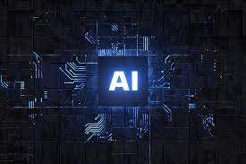

The various area of AI
Artificial intelligence is a new technical discipline that studies and develops theories, methods, technologies, and application systems for imitating human intelligence extension and expansion.
Artificial intelligence research aims to enable machines to execute some complex jobs that would otherwise require intelligent humans. That is, we hope that the machine will be able to solve some difficult jobs for us, not simply monotonous mechanical activities, but also ones that demand human wisdom. In this article we will be diving deep into the 6 fields of AI and other branches of artificial intelligence. but first of all, what is artificial intelligence and component of AI.
Component of Artificial Intelligence
1. Learning
2 . Problem-solving
3.AI Reasoning
